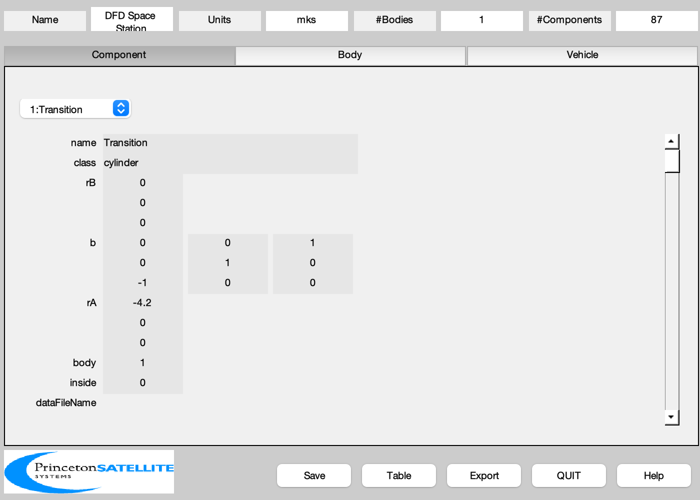
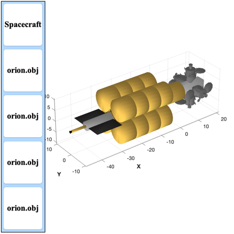

Fusion Drive-powered space station design and CAD model.
Designs a notional space station with a fusion reactor as power source that can dock 4 Orion spacecraft at the same time.
It has docking space for 4 Orion Spacecraft or DFD Transfer vehicles. All dimensions are in meter and mass in kg.
See also: BuildCADModel, CreateComponent, ExportOBJ
Contents
%-------------------------------------------------------------------------- % Copyright (c) 2013 Princeton Satellite Systems, Inc. % All Rights Reserved. %-------------------------------------------------------------------------- % Since version 2014.1 %--------------------------------------------------------------------------
Controls
%---------- addOrion = 1; % add capsule to station exportCAD = 0; makeCADModel = 1;
Inputs
%-------- % http://www.nasa.gov/pdf/617408main_fs_2011-12-058-jsc_orion_quickfacts.pdf %-------------------------------------------------------------------------- massOrion = (21650 + 27198 - 15000)/2.205; specPower = 1; % kW/kg powerPerEngine = 6e6; power = powerPerEngine; eta = 0.58; fS = 0.03; % kg/kg fuel tank/fuel % Fusion engines %--------------- rEngine = 0.55; lEngine = 12*rEngine; lNozzle = 0.8; massEngine = powerPerEngine*1e-3/specPower; % Docking collar %--------------- massDockingCollar = 100; rDockingCollar = 0.58; lDockingCollar = 1; % Radiator %--------- radiatorArealMass = 2.75; tempRadiator = 625; tRadiator = 0.1; massTruss = 20; lengthTruss = 3; % Fuel tanks %----------- nTank = 4; lTank = 20; rTank = 4; fInsulation = 1.2; % Insulation thickness is 20% of tank densityD = 162.4; % kg/m^3 nTankPerRow = 4; tankSpacing = lTank/100; massTank = (1+fS)*lTank*pi*rTank^2*densityD; wDock = 4; lDock = 12; massDocking = 10000; massHabitat = 10000; rHabitat = 4; lHabitat = 12; xHabitat = [-4.2;0;0]; xDocking = [lHabitat+lDock/2;0;0]+xHabitat; % Cylindrical transition structure %=-------------------------------- lCylTrans = 12; rCylTrans = 2; massCylTrans = 200; % Orion to engine transition structure %------------------------------------- rUOrionTrans = 2; rLOrionTrans = 3; lOrionTrans = 2; massOrionTrans = 20;
Build the CAD model
%-------------------- BuildCADModel( 'initialize' ); BuildCADModel( 'set name' , 'DFD Space Station' ); BuildCADModel( 'set units', 'mks' ); m = CreateBody( 'make', 'name', 'Core' ); BuildCADModel('add body', m ); BuildCADModel( 'compute paths' ); % Habitat and docking module %--------------------------- b = [0 0 1;0 1 0;-1 0 0]; m = CreateComponent( 'make', 'cylinder', 'rUpper', rHabitat, 'rLower', rHabitat, 'h', lHabitat, 'n', 20, 'b', b, ... 'faceColor', 'gold foil','inside',0, 'rA', xHabitat, 'mass', massHabitat, 'name', 'Transition', 'body', 1 ); BuildCADModel( 'add component', m ); m = CreateComponent( 'make', 'box', 'x', lDock ,'y',wDock ,'z',wDock,... 'faceColor', [1 1 1],'inside',0, 'rA', xDocking, 'mass', massDocking, 'name', 'Docking Module', 'body', 1 ); BuildCADModel( 'add component', m ); % Docking collars %---------------- ang = 0; for k = 1:4 c = cos(ang); s = sin(ang); b = [1 0 0;0 c s;0 -s c]; x = [xDocking(1);0;wDock/2]; dN = sprintf('Docking Collar %d',k); m = CreateComponent( 'make', 'cylinder', 'rUpper', rDockingCollar, 'rLower', rDockingCollar, 'h', lDockingCollar, 'n', 20, 'b', b, ... 'faceColor', 'steel','inside',0, 'rA', b*x, 'mass', massDockingCollar, 'name', dN, 'body', 1 ); BuildCADModel( 'add component', m ); if( addOrion ) x = b*(x + [0;0;4]); BuildCADModel( 'add subassembly', 'Orion', 1, x, b*[0 0 1;0 1 0;-1 0 0] ); end ang = ang + pi/2; end % Add insulation %--------------- rTank = fInsulation*rTank; lTank = fInsulation*lTank; ang = pi/4; b = [0 0 1;0 1 0;-1 0 0]; lT = lTank/nTankPerRow; xTank = -4.2 - lTank; % Add truss %---------- xBottom = [xTank;0;0]; xTop = [xTank+lTank;0;0]; [v, f] = Truss( xBottom, xTop, rTank, 8 ); c = cos(pi/4); v = ([1 0 0;0 c c;0 -c c]*v')'; m = CreateComponent( 'make', 'generic', 'vertex', v, 'face', f,'edgeColor', 'truss' ,'rA',[0;0;0],... 'name', 'Truss', 'body', 1, 'faceColor', [0.8 0.1 0.2],'inside', 1 ); BuildCADModel( 'add component', m ); % Add tanks %---------- for j = 1:nTankPerRow for k = 1:nTank y = 1.5*rTank*cos(ang); z = 1.5*rTank*sin(ang); ang = ang + pi/2; rA = [xTank;y;z]; name = sprintf('Fuel Tank %d',k); m = CreateComponent( 'make', 'cylinder', 'rUpper', rTank, 'rLower', rTank, 'h', lT, 'n', 20, 'b', b, ... 'faceColor', 'gold foil','inside',0, 'rA', rA, 'mass', massTank, 'name', name, 'body', 1 ); BuildCADModel( 'add component', m ); end xTank = xTank + lT + tankSpacing; end xTank = -4.2 - lTank; m = CreateComponent( 'make', 'cylinder', 'rUpper', rUOrionTrans, 'rLower', rLOrionTrans, 'h', lOrionTrans, 'n', 20, 'b', b, ... 'faceColor', 'steel','inside',0, 'rA', [-4.2;0;0], 'mass', massOrionTrans, 'name', 'Transition', 'body', 1 ); BuildCADModel( 'add component', m ); xTrans = xTank - lCylTrans; m = CreateComponent( 'make', 'cylinder', 'rUpper', rCylTrans, 'rLower', rCylTrans, 'h', lCylTrans, 'n', 20, 'b', b, ... 'faceColor', 'aluminum','inside',0, 'rA', [xTrans;0;0], 'mass', massCylTrans, 'name', 'Transition', 'body', 1 ); BuildCADModel( 'add component', m ); % Add Engines %------------ ang = 0; massNozzle = 0.05*massEngine; massEngine = 0.95*massEngine; xEngine = xTrans - lEngine; xNozzle = xEngine - lNozzle; rA = [xEngine;0;0]; name = 'Fusion Reactor'; m = CreateComponent( 'make', 'cylinder', 'rUpper', rEngine, 'rLower', rEngine, 'h', lEngine, 'n', 20, 'b', b, ... 'faceColor', 'gold foil','inside',0, 'rA', rA, 'mass', massEngine, 'name', name, 'body', 1 ); BuildCADModel( 'add component', m ); rA = [xNozzle;0;0]; name = sprintf('Magnetic Nozzle %d',k); m = CreateComponent( 'make', 'cylinder', 'rUpper', 0.5*rEngine, 'rLower', rEngine, 'h', lNozzle, 'n', 20, 'b', b, ... 'faceColor', 'black','inside',0, 'rA', rA, 'mass', massNozzle, 'name', name, 'body', 1 ); BuildCADModel( 'add component', m ); % Add Radiators %-------------- heatRadiatedPerSide = (1-eta)*power/4; % for one radiator side sigma = 5.67e-8; area = heatRadiatedPerSide/(sigma*tempRadiator^4); xWidth = lCylTrans; yWidth = area/xWidth; massRadiator = radiatorArealMass*area; q = 1; for k = 1:2 name = sprintf('Radiator %d',k); rA = [xTrans + 0.5*lCylTrans;q*(rCylTrans+lengthTruss);0]; m = CreateComponent( 'make', 'box', 'x', xWidth, 'y', yWidth, 'z', tRadiator, ... 'faceColor', 'radiator','inside',0, 'rA', rA, 'mass', massRadiator, 'name', name, 'body', 1 ); BuildCADModel( 'add component', m ); name = sprintf('Radiator Truss %d',k); rA = [xTrans + 0.5*lCylTrans;q*rCylTrans;0]; m = CreateComponent( 'make', 'box', 'x', tRadiator, 'y', lengthTruss, 'z', tRadiator,'faceColor', 'black','inside',0, ... 'rA', rA, 'mass', massTruss, 'name', name, 'body', 1 ); BuildCADModel( 'add component', m ); q = -q; end g = BuildCADModel( 'get cad model' ); BuildCADModel('show vehicle'); 
Export
%-------- if( exportCAD ) if( addOrion ) ExportOBJ( g, FileFullpath('DFDSpacestationOrion') ); else ExportOBJ( g, FileFullpath('DFDSpacestation') ); end end %-------------------------------------- % $Id: ba25d5bd3a3aa576204f276bbf714843a23a2089 $